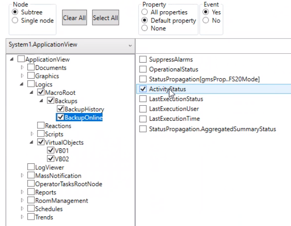

Set Selection and Subscription
In this procedure you will specify for which system objects properties and events will be exposed to third-party systems.
- From the system view drop-down list, select the desired view.
- A progress bar bottom right indicates loading tree nodes in progress. When completed, Desigo CC System Browser data for the selected view are displayed accordingly in the SNMP Configurator.
- (Optional) To narrow the list of objects for the current view, enter the appropriate criteria in the search box and click Search.
- Specify the way subtree or single nodes will be selected for the subscription in one of the following ways:
- To select all the nodes for the current view, in the Node panel, select Subtree and click Select All.
NOTE: Click Clear All to clear all selection mode configuration. - To select a subtree in the current view, in the Node panel, select Subtree, then in the tree view, select the check box that corresponds to the parent node of the desired subtree.
- To select a specific individual node in the current view, in the Node panel, select Single Node, and then in the tree view, expand the tree and select the check box that corresponds to the desired node.
- For the specified object selection, in the Property panel, specify the type of subscription for the properties in one of the following ways:
- To subscribe to all the properties, select All properties.
This results in all the properties automatically selected in the list to the right of the tree view. - To subscribe to the default property, select Default property.
This results in the corresponding default property automatically selected in the list to the right of the tree view. - To exclude all the properties from the subscription, select None.
NOTE: This setting is disabled if Event = No. - For the specified object selection, from the list of properties to the right of the tree view, select the check boxes that correspond to the object properties for which you want to be notified of any status changes.
NOTE: To view the node properties, select the desired node. The properties visible to the SNMP Agent are the ones with DL4 set in the object model of the system object selected in the SNMP tree. Properties with DL0, DL1, DL2, DL3, or no display level are not displayed in the SNMP Configurator. - For the specified object selection, in the Event panel, specify the type of subscription for the events in one of the following ways:
- To subscribe to all the events, select Yes.
This results in the Enable events notification check box being selected automatically. - To exclude all the events from the subscription, select No.
NOTE: This setting is disabled if Property = None. - To be notified of object events only, excluding status change notifications, deselect the check boxes of the properties to the right of the tree view, and select the Enable events notification check box.
- Repeat the previous steps for all the views you want to set.
